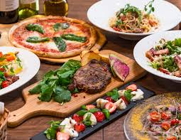

Thank you for visiting our webpage! Please visit again!

The rest of the world calls it "spaghetti bolognese" -- but the rest of the world is wrong. This perfect blend of delicate ragù sauce and fresh golden tagliatelle pasta is a signature of the northern Emilia Romagna region, in particular the city of Bologna -- hence the naming error. Legend has it the tagliatelle shape was inspired by the curly blonde hair of fearsome 16th-century Italian noblewoman Lucrezia Borgia. The ragù is made with finely chopped or ground pieces of pork and beef mixed with celery, carrots, onions, tomato sauce and red wine.
The word pesto literally means "crush" in Genoese. In this case, basil, Parmigiano Reggiano cheese, pine kernels, garlic cloves, coarse salt and extra virgin olive oil, pulverized together in a Genoese marble mortar. They combine to create a dense creamy sauce that smells of a Mediterranean garden and cries out to be stirred through a bowl of handmade trofie pasta twists. This dish is at its best in Genoa, in northwestern Liguria, a land of seafarers and adventurers. The region was a spice trade hub in the Middle Ages, when use of herbs and flowers to flavor food became commonplace. A legacy of these times, Pesto flourished in the 1800s based on an earlier, older recipe made with garlic called "agliata."
Freezer-ready superstore versions of this classic, more suited to propping open doors or breaking windows, have done it few favors over the years. But made well -- with rich layers of ragù, béchamel sauce and Parmigiano cheese oozing between hand-made "sfoglia" sheets of fresh flat pasta -- it's still heavenly. Eaten via recipes that use either spinach or tomatoes, lasagne is closely linked to the northern food mecca of modern Bologna, but traces its origins to Roman times.
Handmade pasta shaped like knots are stuffed with pork loin, ham, Mortadella salami, Parmigiano cheese, eggs and nutmeg, and thrown in a thick capon broth. Spurious legend has it that a voyeuristic innkeeper in Bologna was peeking through a keyhole to spy on Venus, Mars and Bacchus in the middle of a hot and heavy threesome. He caught just a glimpse of the goddess's perfect belly button and tried to reproduce it in pasta form. Voila! Tortellino was born. The original recipe is protected by the Confraternity of Tortellino, die-hard purists who don't tolerate creative twists.
This one's made from dried fish. No, stay with us! This isn't the gelatinous reconstituted fish of Scandinavian nightmares, this is a far more delicious proposition. The secret is in the preparation -- a recipe invented by merchants from Vicenza in the 1500s and protected by a brotherhood of chefs. Dried cod is softened by beating and then placed under running water for two days. Then extra virgin olive oil, milk, Parmigiano, onions and anchovies are added and cooked slowly so that the ingredients penetrate into each other.
It's in the nature of Italians to live life with a positive tone and to celebrate the invitations that come along in life. Italian food is so conducive to all of that.
I do love Italian food. Any kind of pasta or pizza. My new pig out food is Indian food.
Italian food is seasonal. It is simple. It is nutritionally sound. It is flavorful. It is colorful.
Everybody has different tastes. Some people love Italian food; some don't.